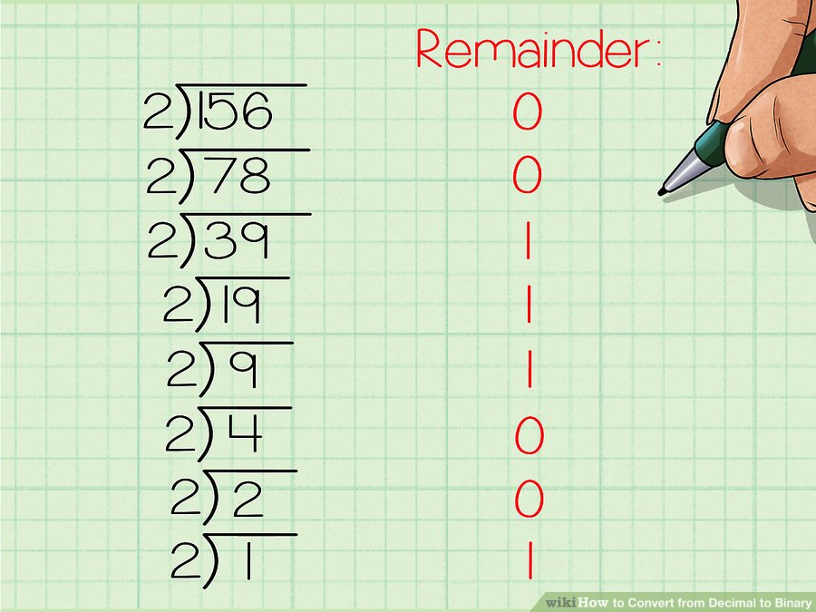
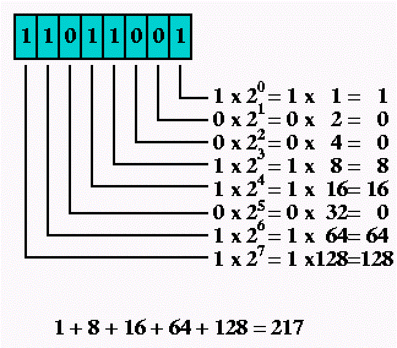

0 1 2 3 4 5 6 7 8 9
101 101
+ 1 AND + 11
= 110 = 1000
11 * 10 = 110
You can convert from decimal to binary
You can convert from binary to decimal
but....Python does it much better
>>> binary = bin(120)
>>> print(binary, type(binary))
0b1111000 < class 'str' >
>>> num = int('110011', base=2)
>>> print (num, type(num))
51 < class 'int' >
>>> x = 0x1A
>>> print(x)
26
>>> hexvalue = hex(31337)
>>> print(hexvalue, type(hexvalue))
0x815D < class 'str'>
>>> num = int('100', base=2)
>>> print(num)
4
>>> num = int('100', base=16)
>>> print(num)
256
| A | B | A AND B |
|---|---|---|
| True | True | True |
| True | False | False |
| False | True | False |
| False | False | False |
| A | B | A OR B |
|---|---|---|
| True | True | True |
| True | False | True |
| False | True | True |
| False | False | False |
| A | NOT A |
|---|---|
| True | False |
| False | True |
print(10 < 11 and 1 < 10) # print True
print(not(10 > 11)) # print True
print(10 > 20 or 1 > 10) # print False
if age > 18:
print('You are no longer in grade school')
elif age > 15:
print('You are in high school')
elif age > 10:
print('You are in middle school')
elif age > 5:
print('You are in elementary school')
else:
print('You are too young to do Python!')
Write a script to continuously ask the user to input a letter, then prints out a fruit you know starting with that letter. The script should ask the user up to 10 times. The letter is not case sentitive. Handle the error case where user enter something other than a letter. When the user enter stop, exit. A few examples fruit are: apple, banana, cherry.
What do we need to do?
Write a script to ask the user for a number between 1 and 10, and prints out the following pattern:
# If user input 4
*
**
***
****
What do we need to do?
Write a script to ask the user for two numbers between 1 and 10. Then, print out the following pattern:
# If user input 7 and 3
7 6 5 4 3
7 6 5 4
7 6 5
7 6
7
Break this down to smaller problems:
1. Ask for two numbers between 1 and 10, and determine where to start end where to end
2. Loop from start to end
3. Count, in reverse order, from end to start